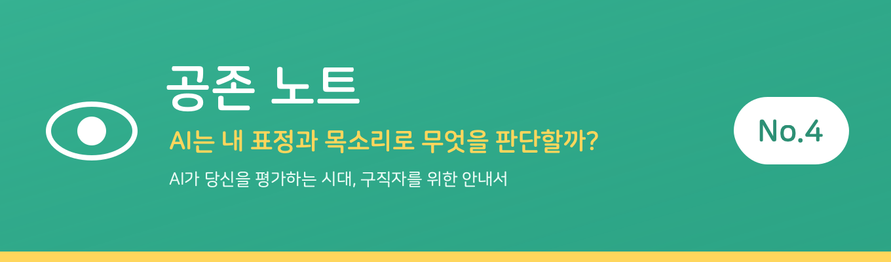
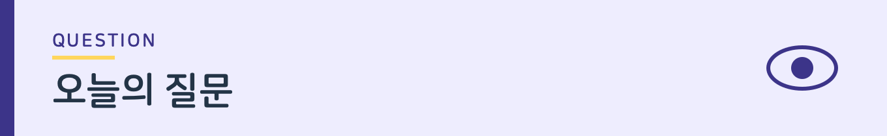
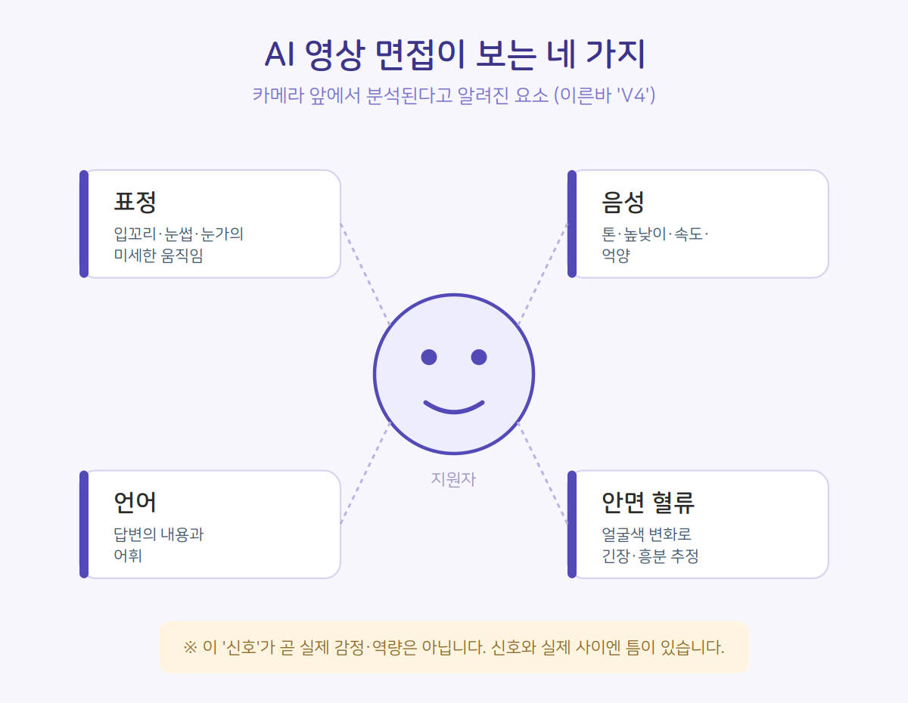

지난 호에서 우리는 AI 역량검사의 게임을 살펴봤습니다. 오늘은 영상 면접으로 들어갑니다.

카메라 앞에 앉는 순간, AI는 나의 무엇을 보고 있을까요. 그리고 그것이 읽는 건 정말 '나'일까요.
AI가 보는 네 가지 — 이른바 'V4'
AI 영상 면접이 분석한다고 알려진 요소는 크게 네 가지입니다. 표정, 음성, 언어(답변 내용), 그리고 안면 혈류입니다. 취업 정보 사이트에서는 이 네 가지의 앞글자를 따 'V4'라 부르기도 합니다. (한 언론 기고 및 취업 정보 사이트 정리 기준)
- 표정: 입꼬리, 눈썹, 눈 주변의 미세한 움직임으로 감정을 추정합니다.
- 음성: 톤, 높낮이, 속도, 억양에서 정서 상태를 읽으려 합니다.
- 언어: 답변의 내용과 어휘를 분석합니다.
- 안면 혈류: 얼굴 색의 미묘한 변화로 긴장·흥분 등을 추정한다고 알려져 있습니다.

그래서 취업 사이트에는 "표정을 관리하고, 시선을 고정하고, 목소리 톤을 일정하게 유지하라"는 코칭이 올라옵니다.
그런데 — 미소가 항상 '긍정'일까
여기서 근본적인 질문이 생깁니다. 표정이나 목소리 같은 '신호'가, 정말 그 사람의 '감정'과 일치할까요.
연구자들은 오래전부터 이 지점을 지적해왔습니다. 미소가 항상 긍정적 감정을 뜻하지는 않습니다. 긴장해서 짓는 미소도, 곤란해서 짓는 미소도 있습니다. 목소리의 떨림 역시 불안일 수도, 단순한 긴장일 수도, 혹은 그날의 컨디션일 수도 있습니다.
즉 AI가 읽는 것은 '감정'이 아니라 '감정의 신호로 추정되는 것'입니다. 신호와 실제 사이에는 언제나 틈이 있습니다.
누구의 표정을 기준으로 배웠나
또 하나의 문제는 편향입니다. AI는 학습한 데이터를 기준으로 판단합니다. 그런데 감정을 표정으로 드러내는 방식은 문화·사회·성격에 따라 다릅니다.
감정 인식 AI의 상당수는 서구권 데이터를 중심으로 학습됐다는 지적이 있습니다. 표현이 큰 사람과 작은 사람, 문화적으로 감정을 절제하는 배경을 가진 사람이 같은 잣대로 평가된다면, 그 결과는 공정하다고 보기 어렵습니다.
무표정한 사람이 '소극적'으로, 긴장한 사람이 '불안정'으로 읽힐 수 있습니다. 그러나 그것이 그 사람의 역량일까요.
표정 연기보다 알아야 할 것
그렇다면 구직자는 무엇을 해야 할까요. 취업 사이트의 조언처럼 표정을 연기하고 목소리를 훈련하는 것이 답일까요.
물론 기본적인 준비는 도움이 됩니다. 카메라를 정면으로 보고, 또렷하게 말하고, 지나치게 경직되지 않는 것. 하지만 'AI가 좋아할 표정'을 만들려 애쓰는 것은 한계가 분명합니다. AI가 무엇을 어떻게 읽는지 완전히 공개되지 않은 상태에서, 그 기준에 나를 맞추는 것은 밑 빠진 독에 물 붓기일 수 있습니다.
더 중요한 것은, 이 평가 방식 자체가 지금 논의의 대상이라는 사실을 아는 것입니다. 한국노동연구원의 정책 가이드라인은 이 'V4' 판단을 제한해야 한다고 제안한 바 있습니다. 표정과 혈류로 사람을 평가하는 것이 과연 타당한지, 전문가들도 의문을 제기하고 있다는 뜻입니다.
맺음말
카메라 앞에서 완벽한 표정을 지으려 애쓰기 전에, 한 가지는 기억할 만합니다. AI가 읽는 나의 표정과 목소리는 '신호'일 뿐, 나라는 사람 전체가 아닙니다.
공존 노트는, 구직자가 AI의 기준에 자신을 맞추려 애쓰기보다, 그 기준이 정당한지 물을 수 있어야 한다고 봅니다. 표정을 관리하는 법을 아는 것과, 표정으로 사람을 판단하는 것이 옳은지 묻는 것은 다른 일이니까요.

확인된 사실들
• AI 영상 면접이 분석한다고 알려진 것은 표정·음성·언어·안면 혈류, 이른바 'V4'
• AI가 읽는 것은 감정이 아니라 감정의 신호로 추정되는 것 — 신호와 실제 사이엔 틈이 있다
• 감정 인식 AI 상당수가 서구권 데이터 중심으로 학습됐다는 편향 지적이 있다
• 한국노동연구원 정책 가이드라인은 V4 판단을 제한해야 한다고 제안한 바 있다

이렇게 대비하세요
• 기본 준비는 도움이 된다 — 카메라 정면, 또렷한 발성, 지나친 경직 피하기
• 'AI가 좋아할 표정' 연기는 밑 빠진 독 — 기준이 공개돼 있지 않다
• AI가 읽는 표정·목소리는 '신호'일 뿐, 나라는 사람 전체가 아니다
• 기준에 나를 맞추기보다, 그 기준이 정당한지 물을 수 있어야 한다

다음 호에서는 'AI 채용, 기업은 왜 도입할까?' 를 다룹니다. 이번엔 반대편, 기업의 계산을 들여다봅니다.
※ 'V4' 및 분석 요소는 언론 보도·취업 정보 사이트 정리 기준이며, 실제 분석 방식은 솔루션·기업에 따라 다르고 공개되지 않은 경우가 많습니다. 특정 솔루션의 작동 방식을 단정하지 않습니다.